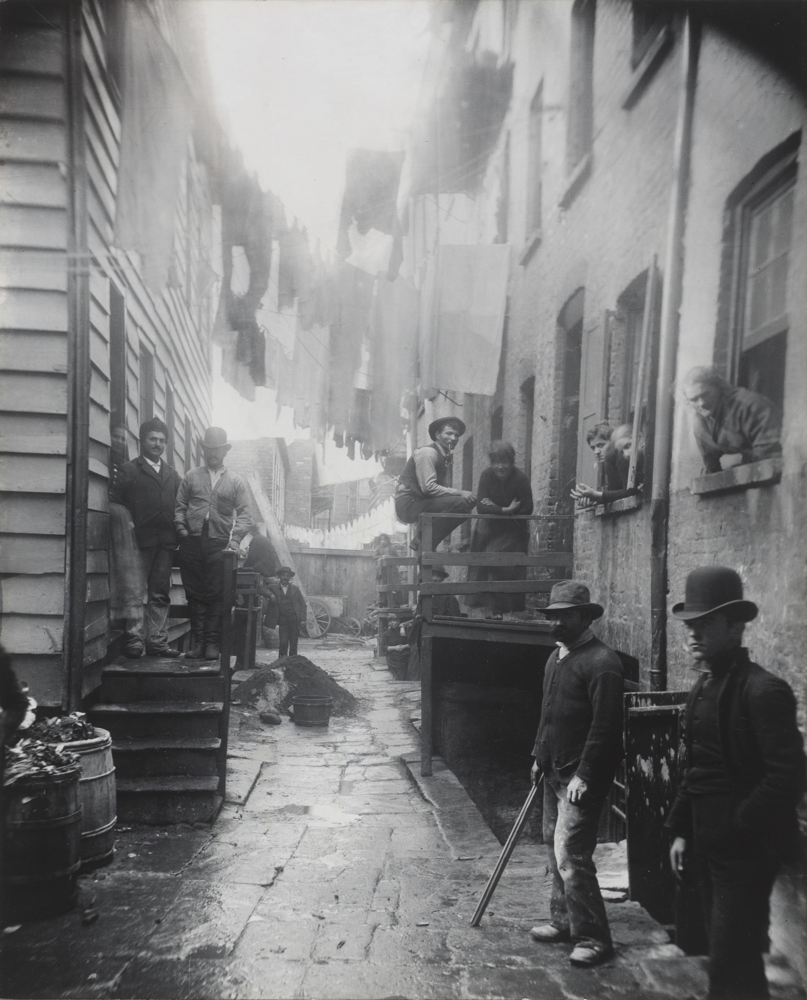

CLAIMEconomic power is one form of power, and it is not the source of all the others.
REASONINGWeber begins by separating economic power from power in general. Economic power can itself be the result of power held on other grounds. People do not seek power only to get rich: power can be wanted as an end in itself, or for the honor it brings. Honor and power do not always travel together. The political boss and the big speculator, as Weber describes them, hold real power and give up social honor on purpose. Naked money power is not by itself a recognized basis of honor, and honor in turn can serve as a base for political or economic power. He then names the three subjects of the chapter as phenomena of how power is distributed in a community.
EXAMPLEA family with an old name and little cash may still be listened to in a town where a rich newcomer is not.
CLAIMA class is a set of people who share a life chance determined by their position in the market.
REASONINGWeber gives three conditions. People have in common a particular causal factor in their chances in life. That component consists only of economic interests in goods and income opportunities. And it operates under the conditions of a commodity or labor market. Class situation is therefore market situation. A class is not a community: it is a frequent basis for common action, not common action itself. Property matters because holding it or lacking it separates the market positions of the propertied from the propertyless, and differentiates positions inside each group. People whose fate is not set by what they can sell or buy, slaves for instance, are not a class in this technical sense. Weber classes them as a status group.
EXAMPLETwo households with different wages and different chances of securing steady work, housing, and schooling occupy different class situations, whatever either thinks of itself.

CLAIMA status group is a community defined by a positive or negative social estimate of honor, and honor need not follow class.
REASONINGAny shared quality can anchor honor: descent, occupation, manner of living. Class and status link up in many ways, and over the long run property tends to be recognized as a status qualification with great regularity. Yet status honor need not be tied to class, and it often stands opposed to the claims of sheer property. Propertied and propertyless people can share one status group with tangible effects. Weber's example is the American gentleman: in the club, the richest head of a firm was expected to treat his clerk as a full equal, whatever the subordination of the office. Status groups also tend to monopolize goods and opportunities, and many privileged ones look down on manual work and on money-making as such. The market takes no notice of persons. The status order is its reverse, stratifying by honor and style of life. For that reason status groups react sharply against purely economic acquisition, withdraw certain goods from free exchange, and treat haggling over price as beneath honor. Where status governs, free exchange shrinks and naked property counts for less.
EXAMPLEA profession that admits entrants on pedigree, apprenticeship, and manners, and refuses to let a fee alone decide, is withholding something from open exchange. The example is ours, not Weber's.
CLAIMParties live in the house of power: they aim at influencing communal action, whatever its content.
REASONINGWhere classes belong to the economic order and status groups to the social order, parties act on the distribution of power directly. They can form inside a social club no less than inside a state. Their aim may be a cause, an ideal or material program, or it may be personal: office, power, and the honor that follows for the leader and followers. Usually both at once. A party may speak for a class situation or a status situation and recruit from either, but it need be neither. Weber applies the word to ancient and medieval factions too, though their structure differs from modern parties.
EXAMPLEA neighborhood association that organizes to change a zoning decision is acting as a party in this sense, whether its members share an income level or not.
| Distinction | What separates the two sides |
|---|---|
| Economic power vs power in general | Economic power can be the product of other power, and power can be wanted for its own sake or for honor. |
| Class vs status group | Market chances against social honor. Status groups are normally communities, and classes are not. |
| Weber’s class vs Marx’s class | A market position, against a relation to the means of production. |
| Status vs party | Honor and a style of life, against organized effort to shape communal action. |
A Marxist can accept every distinction above and still reply that status and party are shadows of class. Weber himself concedes that property tends, over the long run, to be recognized as a status qualification with great regularity, and that parties often speak for class interests. On this reading the three dimensions look independent only when history is stopped at one moment, and over time honor and political power realign with ownership.
Weber does not answer this with a decisive counterexample in the chapter. His claim is narrower: the three dimensions explain particular cases that a single axis cannot, and some divergences between them are stable. Whether explanatory usefulness in particular cases answers a claim about the long run is the open dispute.
- What is the specific difference between class, as a market phenomenon, and status, as a social honor phenomenon? Give an example, not Weber’s own, of someone who is high in class but low in status, or low in class but high in status.
- Weber argues that stratification by status obstructs the free working of the market. What does he mean? How can prestige and honor conflict with economic rationality?
- What is a party in Weber’s sense? Is it the same as a political party in ordinary usage, or broader?
- Marx would say that Weber’s status and party reduce to class in the long run. Is this a convincing objection? What evidence would settle the dispute?